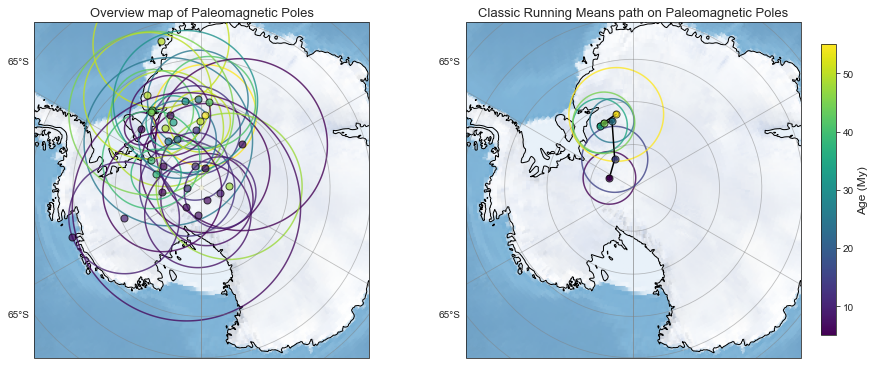
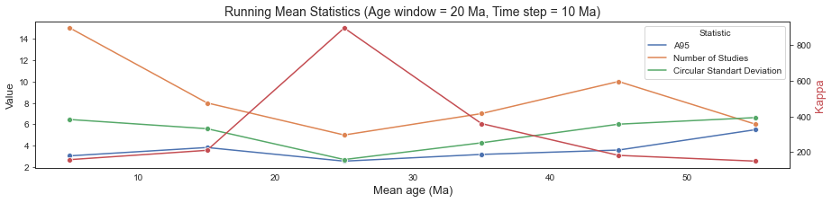

Conventional pole-based APWP
Contents
Conventional pole-based APWP#
import os
import numpy as np
import pandas as pd
pd.set_option('display.max_columns', None)
from pmagpy import ipmag, pmag
import matplotlib.pyplot as plt
import seaborn as sns
sns.set_style("white")
from vgptools.auxiliar import (get_files_in_directory, spherical2cartesian,
cartesian2spherical, GCD_cartesian)
from vgptools.utils_compilation import dfs_vgps_recomputed_poles
from vgptools.utils_APWPs import running_mean_APWP
from vgptools.utils_visualization import RM_stats, plot_poles_and_APWP, RM_APWP_lat_lon_A95
Path to the VGP directory.
current_path = os.getcwd()
data_path_VGP = current_path + '/data/vgp_database'
Generate a DataFrame for both, the VGPs and the recomputed poles by study#
In doing so, we calculate a pole for each study taking into account all the vgps within the same area/study
df_filtered_vgps, df_pole_compilation_by_study = dfs_vgps_recomputed_poles(data_path_VGP, by_study = True)
df_pole_compilation_by_study.to_csv(current_path +'/data/df_pole_compilation_by_study.csv', index = False)
df_pole_compilation_by_study.head(3) #
| Study | pole | N | K | A95 | slat | slon | Plat | Plon | min_age | max_age | mean_age | |
|---|---|---|---|---|---|---|---|---|---|---|---|---|
| 0 | Absaroka_volcanics | NaN | 44 | 11.076771 | 6.774448 | 44.613899 | 250.051065 | -81.917678 | 328.575930 | 45.00 | 54.000 | 49.5000 |
| 1 | Beaver_River_intrusions | NaN | 21 | 44.972756 | 4.792312 | 60.238151 | 234.652209 | -79.313242 | 327.669841 | 40.50 | 43.500 | 42.0000 |
| 2 | Bighorn_Basin_sediments | NaN | 59 | 10.640570 | 5.954672 | 44.459816 | 251.809627 | -81.549042 | 2.761738 | 52.54 | 59.237 | 55.8885 |
Agragated poles by Study#
We first apply the running mean method with the same parameter as in Torsvik et al. 2012 - a window lenght of 20 Ma and a time-step of 10 Ma.
min_age = 5
max_age = 65
window_length = 20
time_step = 10
RM_classic_by_study = running_mean_APWP (df_pole_compilation_by_study, "Plon", "Plat", "mean_age", window_length, time_step, max_age, min_age)
RM_classic_by_study.head(15)
| age | N | n_studies | k | A95 | csd | plon | plat | |
|---|---|---|---|---|---|---|---|---|
| 0 | 5.0 | 15.0 | 15.0 | 157.806367 | 3.053286 | 6.447966 | -67.163587 | -87.015353 |
| 1 | 15.0 | 8.0 | 8.0 | 210.014597 | 3.831130 | 5.589337 | -32.919354 | -86.068555 |
| 2 | 25.0 | 5.0 | 5.0 | 895.850781 | 2.557892 | 2.706245 | -17.523472 | -81.827340 |
| 3 | 35.0 | 7.0 | 7.0 | 360.030070 | 3.185699 | 4.268897 | -28.223624 | -81.832353 |
| 4 | 45.0 | 10.0 | 10.0 | 181.627221 | 3.594097 | 6.010278 | -24.352354 | -81.719603 |
| 5 | 55.0 | 6.0 | 6.0 | 149.367567 | 5.499925 | 6.627609 | -13.024997 | -81.238399 |
extent = [-180,180,-70,-70]
plot_poles_and_APWP(extent, df_pole_compilation_by_study, RM_classic_by_study)
# plt.savefig(current_path + '/figures/2/2_AB.svg', dpi =600, bbox_inches='tight')

Age distribution of paleomagnetic poles#
sns.set_style(style=None, rc=None)
sns.set_palette("deep")
fig = plt.figure(figsize=(15,2))
plt.title('Mean age distribution of Paleomagnetic Poles', fontsize =15)
plt.ylabel('# of Paleomagentic Poles', fontsize = 12)
plt.xlabel('Mean Age (Ma)', fontsize = 12)
sns.histplot(data = df_pole_compilation_by_study, x = 'mean_age', bins = 40, legend = False, edgecolor=".1")
# plt.savefig(current_path + '/figures/2/2_C.svg', dpi =600, bbox_inches='tight')
<AxesSubplot:title={'center':'Mean age distribution of Paleomagnetic Poles'}, xlabel='Mean Age (Ma)', ylabel='# of Paleomagentic Poles'>
Running Mean Statistics#
sns.set_palette("deep")
RM_stats(RM_classic_by_study, f"Running Mean Statistics (Age window = {window_length} Ma, Time step = {time_step} Ma)","Age (Ma)","kappa")
# plt.savefig(current_path + '/figures/2/2_D.svg', dpi =600, bbox_inches='tight')
